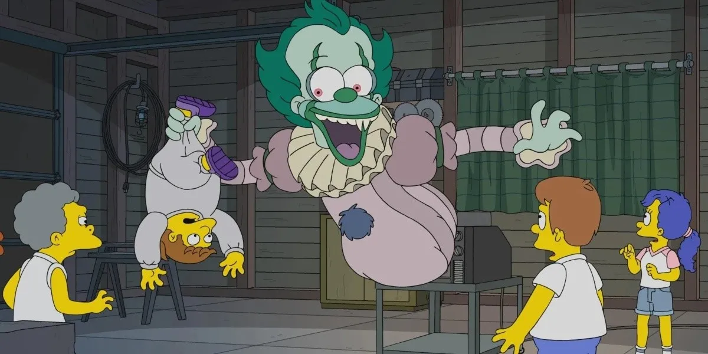
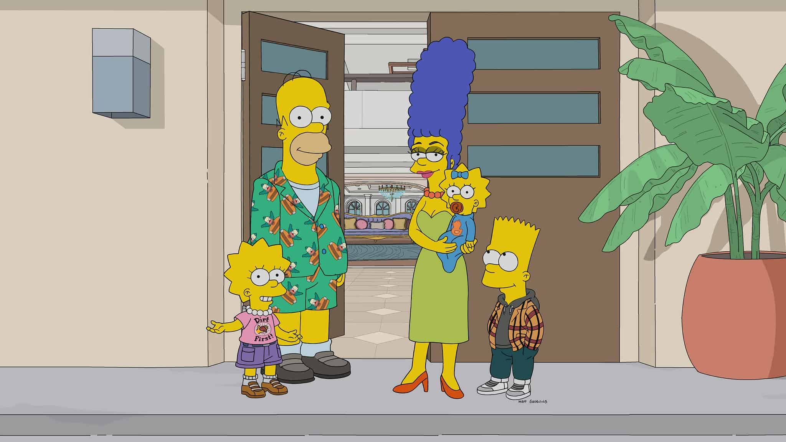

Los Simpsons T.30
Mi lista
Sinopsis:
La temporada número treinta de 'Los Simpson' da el pistoletazo de salida con una de las habituales fechorías de Bart: tras meterse en problemas con los matones, el pequeño termina en el hospital asegurando que ha visto a Jesús. Este increíble hecho termina por acercar a una productora cristiana a la familia para hacer una película, no obstante, todo es mentira. Pese a sus enfrentamientos constantes, Bart se une a Nelson para gastar una gran broma pesada a Moe: conseguirle una novia, pero desde la "deep web". ¿Se meterán en un lío gordo por acceder a este lugar?
Por otro lado, Marge ve como uno de sus sueños están a punto de hacerse realidad. La madre de familia está a punto de viajar junto a Homer al 'Sitio espectacular', un reality show donde podrán ganar un millón de dólares. ¿Se alzarán con el triunfo o, como suele ocurrir, el padre de familia lo torcerá todo en el último momento? No obstante, y hablando de ganar, el padre de familia se lleva el trofeo de un concurso de comida.
Otro de los trabajos que Marge recoge en el currículum durante esta temporada es el de drag queen. Lo que no cambia, además de sus labores como ama de casa, tiene que ver con los problemas que tienen los Simpson para relacionarse entre ellos. Por un lado, Homer se acerca más a Lisa que a Bart, lo que vuelve a provocar un gran sentimiento de inseguridad en el pequeño.
Entre los cameos destacados de esta tanda de capítulos se encuentran los de Jeff Albertson y Gillermo del Toro, quienes tienen más de un encontronazo con Homer y el propio Burns. No obstante, Dios y San Pedro llegan para protagonizar un episodio, mientras los ciudadanos de Springfield rememoran sendas ocasiones en las que han vivido encuentros divinos.
.jfif)
El hotel de los corazones rotos.
60 min
Marge y Homer viajan a una isla tropical y participan en el reality favorito de Marge para ganar un millón de dólares.

La casita del horror XXIX.
60 min
Capítulo especial de Halloween número 29: Homer gana un concurso de comer ostras contra el mítico Cthulhu, Springfield es invadida por plantas extraterrestres, y el Sr. Burns abre una casa de retiro con algunas mejoras jurásicas.
.jfif)
No puedes conducir mi auto.
60 min
Una compañía de automóviles autónomos llega a Springfield y engatusa a todos los empleados de la central nuclear con su divertido ambiente de trabajo.

Krusty el payaso.
60min
Bart, Nelson y Milhouse consiguen una novia de pedido por correo para gastarle una broma pesada a Moe.